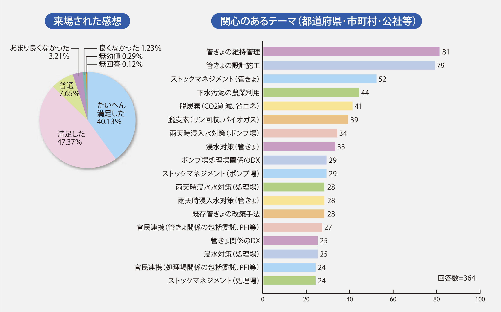
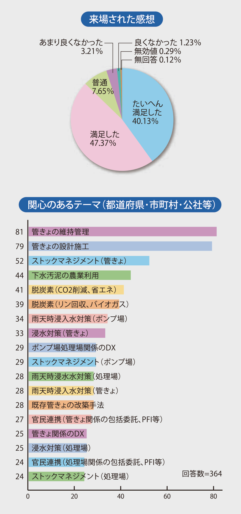
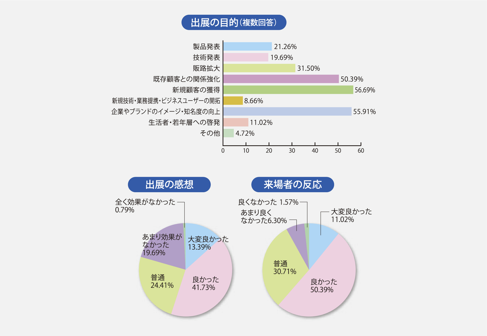
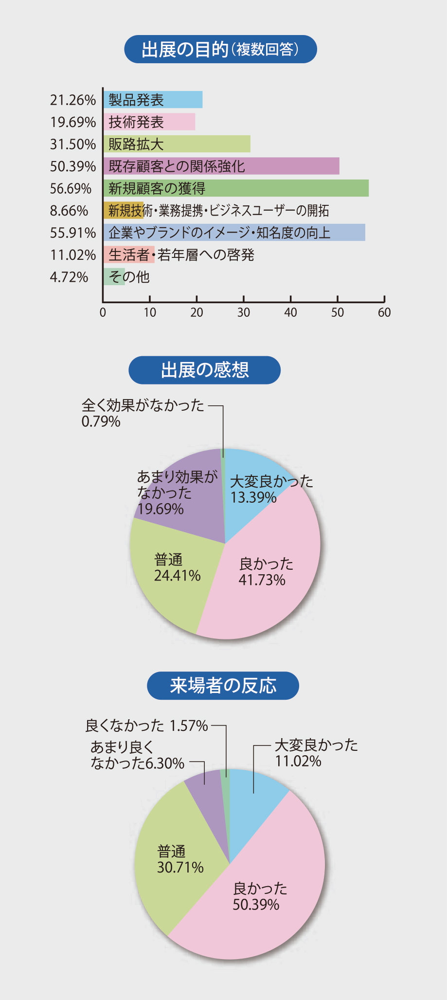

開催実績
最近の開催結果
●開催日別来場者数
【2023】下水道展’23札幌
| 日 付 | 来場者数 | 累 計 |
|---|---|---|
| 8/1 （火） | 7,066人 | ー |
| 8/2 （水） | 8,536人 | 15,602人 |
| 8/3 （木） | 8,475人 | 24,077人 |
| 8/4 （金） | 6,373人 | 30,450人 |
【2022】下水道展’22東京
| 日 付 | 来場者数 | 累 計 |
|---|---|---|
| 8/2 （火） | 6,906人 | ー |
| 8/3 （水） | 7,895人 | 14,801人 |
| 8/4 （木） | 7,962人 | 22,763人 |
| 8/5 （金） | 7,586人 | 30,349人 |
【2021年】下水道展’21大阪
| 日 付 | 来場者数 | 累 計 |
|---|---|---|
| 8/17 （火） | 3,140人 | ー |
| 8/18 （水） | 3,240人 | 6,380人 |
| 8/19 （木） | 3,302人 | 9,682人 |
| 8/20 （金） | 3,143人 | 12,825人 |
【2019年】下水道展’19横浜
| 日 付 | 来場者数 | 累 計 |
|---|---|---|
| 8/6 （火） | 9,681人 | ー |
| 8/7 （水） | 12,642人 | 22,323人 |
| 8/8 （木） | 12,610人 | 34,933人 |
| 8/9 （金） | 11,726人 | 46,659 |
●来場者アンケート


●出展者アンケート


最近の開催実績（’14〜’19、’21〜’23）
| 催事名 | 出展者数 | 小間数 |
|---|---|---|
| ’23札幌 （札幌ドーム） | 299社（団体） | 913小間 |
| ’22東京 （東京ビッグサイト） | 315社（団体） | 1,040小間 |
| ’21大阪 （インテックス大阪） | 282社（団体） | 861小間 |
| 2020年 | (感染症拡大防止の観点から中止) | |
| ’19横浜 （パシフィコ横浜） | 346社（団体） | 1,098小間 |
| ’18北九州（西日本総合展示場） | 301社（団体） | 865小間 |
| ’17東京 （東京ビッグサイト） | 350社（団体） | 1,102小間 |
| ’16名古屋 (ポートメッセなごや) | 277社（団体） | 922小間 |
| ’15東京 （東京ビッグサイト） | 331社（団体） | 1,010小間 |
| ’14大阪 （インテックス大阪） | 306社（団体） | 1,053小間 |
開催までのスケジュール（予定）
-
2月26日（月）
Webサイトによる出展申込締切
-
3月中旬
出展料などご請求
-
4月下旬
出展者説明オンデマンド配信、
説明資料ダウンロード -
5月10日（金）
出展料お支払い期限
-
5月13日（月）～7月12日（金）
Webサイトによる各種申請・申込
-
7月28日（日）～7月29日（月）
設営
-
7月30日（火）～8月2日（金
会期
-
8月2日（金）
撤去
-
10月予定
業務報告書データ提供
ご出展いただいた企業・団体にあて、会期終了後、業務報告書をお送りいたしますが、電子ファイルでの提供となりますのであらかじめご了承下さい
次回以降の開催
2025年 期日未定
下水道展ʼ25大阪／於 大阪市内
【出展者説明 配布資料】
※出展者専用ページよりダウンロードいただけます。
- ・小間図
- ・出展の手引きなど
※出展の手引きはデータのみの配布となりますので、出力してご使用ください。